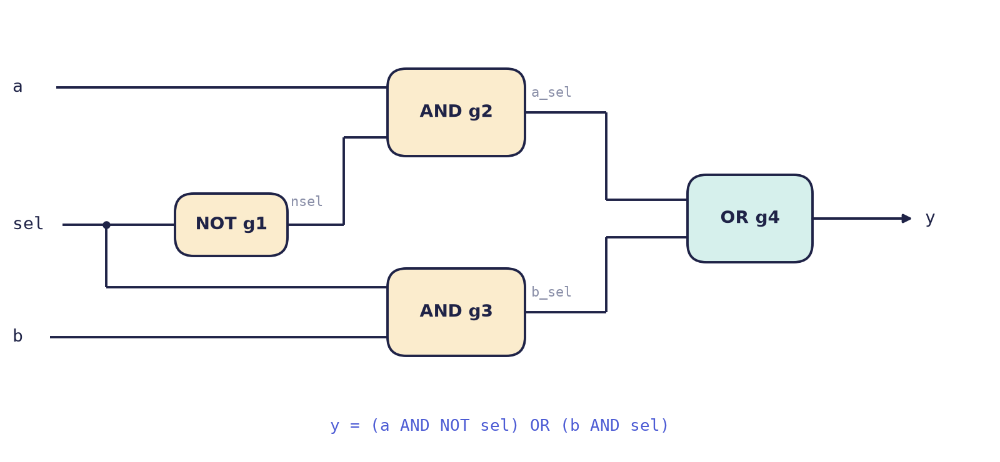

Chapter 3: Verilog: Modules, Signals and Combinational Logic¶
Verilog lets you describe a digital circuit as text. It looks like a programming language, but it is not one, and getting that straight first saves weeks of confusion. This chapter explains what kind of language Verilog is, introduces the module and its ports, the two kinds of signal and the four values a bit can carry, then shows the three styles in which the same circuit can be written and the construct, always @(*), that you will use for most combinational logic. The chapter ends with the first of the two assignment operators, whose proper use is the subject of the next chapter.
3.1 A language for describing hardware¶
A hardware description language lets you write down a circuit as text. Verilog, standardised as IEEE 1364 and later folded into SystemVerilog, is one; VHDL, the subject of Chapters 6 and 7, is the other. In both, you describe what the circuit is: its registers, its logic and how they connect. Every line ends up as wires and flip-flops, not as instructions to a processor, and so all of it is active at the same time, as all the components on a circuit board are.
Compare a C program with a Verilog description:
x = a + b; /* first this */
y = x * 2; /* then this */
z = y - 1; /* then this */
assign z = y - 1; // all three exist together,
assign x = a + b; // in any order
assign y = x * 2;
The C program is run by one processor, line after line, and the order of the lines is the order of events. The three Verilog lines are three pieces of circuitry, all present at once; shuffle them and you describe exactly the same hardware. A program is a recipe, with one cook doing one step at a time. A Verilog description is an orchestra in which every player plays all the time, and what you write is the score that says how they connect.
A Verilog description has two uses.
- Simulation. A program pretends to be the circuit and runs it over simulated time, so that you can test the design before it exists. Icarus Verilog, Verilator and ModelSim are simulators.
- Synthesis. A tool turns your description into a netlist of real gates and flip-flops. Yosys, Vivado and Quartus are synthesis tools.
Everything can be simulated, but only a subset can be synthesised
A line such as #10 ("wait 10 time units") is fine in a simulation and meaningless in silicon, since a chip cannot wait a chosen number of nanoseconds on command. Constructs used to build test environments (delays, printing, file input) are not synthesizable. This book marks them when they appear.
3.2 Modules and ports¶
The building block of Verilog is the module. It has a name, a list of ports (its pins, the connections to the outside world) and a body that says how its outputs depend on its inputs.
// A module: name, ports, body. Comments use // or /* ... */
module and_gate (
input wire a, // input port
input wire b,
output wire y // output port
);
assign y = a & b; // continuous assignment: y is always a AND b
endmodule
From outside, a module is a black box with pins. Larger designs place modules inside modules, like chips on a board, to form a hierarchy. Everything in a module's body happens concurrently, unless it sits inside a procedural block (Section 3.5).
Every port has a direction, written before its name.
| Direction | Meaning | Typical use |
|---|---|---|
input |
driven from outside, read inside | clocks, data in, control |
output |
driven inside, read outside | results, status flags |
inout |
both ways; a tri-state line | shared buses, chip pins |
3.3 Signals and the values they carry¶
wire and reg¶
Verilog has two kinds of signal, and the difference between them is the most common beginner confusion.
wire (a net) |
reg (a variable) |
|
|---|---|---|
| Gets its value from | an assign, or a module output |
an assignment inside always or initial |
| Holds a value? | no: it always shows whatever drives it | yes: it keeps the last value given to it |
| Becomes a flip-flop? | never | only if it is assigned on a clock edge |
A reg is not necessarily a register
The keyword reg does not mean "register". It means "assigned inside a procedural block". A reg written in a combinational block becomes plain gates. SystemVerilog renamed it logic to end the confusion, and a good habit is to read reg as "variable".
Four values¶
A Verilog bit has four values, not two, which models real hardware more faithfully.
| Value | Meaning |
|---|---|
0 |
logic low; false; ground |
1 |
logic high; true |
x |
unknown: never set, or two drivers disagree |
z |
high impedance: not driven at all (tri-state, disconnected) |
An x in simulation is the simulator telling you that it does not know a value, usually a register that was never reset or two outputs fighting. Real hardware would quietly pick a 0 or a 1 and fail some days but not others. Hunt down every x: x & 1 is x because the bit might be 0 or 1.
Number literals¶
A sized literal is written width ' base digits: the number of bits, then the base (b binary, o octal, d decimal, h hexadecimal), then the digits. Underscores are ignored and help reading.
4'b1010 // 4-bit binary = decimal 10
8'hFF // 8-bit hex = 255 (all ones)
6'o17 // 6-bit octal = 15
12'd2048 // 12-bit decimal
16'b1010_1100_0011_0001 // underscores for readability
8'bxxxx_zzzz // partly unknown, partly high-impedance
Example 3.1: widths in literals
What does 4'd17 hold, and what is 8'hA5 in binary?
- The number 17 needs five bits (
10001), but the literal is only four bits wide, so the top bit is dropped and4'd17holds0001, which is 1. This is a classic silent bug. - Each hexadecimal digit is exactly four bits:
Ais1010and5is0101, so8'hA5 = 1010_0101.
3.4 Three ways to write the same circuit¶
Verilog offers three styles for describing a circuit, at different levels of abstraction. To compare them we describe the same 2-to-1 multiplexer in each. Its output \(y\) copies \(a\) when \(sel = 0\) and \(b\) when \(sel = 1\):
Dataflow: assign¶
The circuit is described as Boolean equations on wires. A continuous assignment, assign, says "this wire is always equal to this expression": whenever an input changes, y follows. Here ~ is NOT, & is AND, | is OR and ^ is XOR.
module mux2_dataflow (
input wire a,
input wire b,
input wire sel,
output wire y
);
assign y = (~sel & a) | (sel & b);
// or simply: assign y = sel ? b : a;
endmodule
Structural: instantiate gates¶
The circuit is described as a netlist of named gates, wired together, which is as close to a schematic (Figure 3.1) as text can be. Verilog has built-in primitives and, or, not, nand, nor, xor, xnor and buf. Each line creates an instance, one copy of a building block with its own name, and for built-in gates the output comes first.
module mux2_structural (
input wire a, b, sel,
output wire y
);
wire nsel, a_sel, b_sel; // internal wires
not g1 (nsel, sel); // nsel = ~sel
and g2 (a_sel, a, nsel); // a_sel = a & ~sel
and g3 (b_sel, b, sel); // b_sel = b & sel
or g4 (y, a_sel, b_sel); // y = a_sel | b_sel
endmodule

For your own modules, connect ports by name, which is independent of the order of the ports and documents itself: mux2 u1 (.a(x), .b(y), .sel(s), .y(out));.
Behavioural: always blocks¶
The circuit is described by what it does, and synthesis works out the gates. An always block holds statements that run whenever something they watch changes. Here @(*) means "any input".
module mux2_behavioural (
input wire a, b, sel,
output reg y // assigned inside always, so it is a reg
);
always @(*) begin
if (sel) y = b;
else y = a;
end
endmodule
Which to use?¶
| Style | Describes | Best for | For a 32-bit mux |
|---|---|---|---|
| Dataflow | equations | small combinational logic | change one width |
| Structural | gates and their wiring | joining big blocks together | dozens of hand-wired gates |
| Behavioural | what it does | nearly everything else | change one width |
All three synthesise to the same circuit. Real designs mix them: behaviour inside each block, structure to connect the blocks.
3.5 Combinational logic with always @(*)¶
Combinational logic has outputs that depend only on the inputs right now, with no memory. For anything more complicated than an equation, write it as always @(*). What follows the @ is the sensitivity list, the signals whose change makes the block run again; @(*) builds the list automatically from every signal the block reads. Inside, use the plain assignment =. And give every output a value on every path through the block (Section 5.5 explains why).
// a 4-to-1 multiplexer with case
module mux4 (
input wire [1:0] sel,
input wire a, b, c, d,
output reg y
);
always @(*) begin
case (sel)
2'b00: y = a;
2'b01: y = b;
2'b10: y = c;
2'b11: y = d;
default: y = 1'bx; // good hygiene, even if unreachable
endcase
end
endmodule
A chain of if ... else if gives priority: the first test that is true wins. A case treats its choices as equals. A 2-to-4 decoder with an enable shows the priority of an if chain:
module decoder2to4 (
input wire en,
input wire [1:0] in,
output reg [3:0] out
);
always @(*) begin
if (!en) out = 4'b0000;
else if (in == 2'b00) out = 4'b0001;
else if (in == 2'b01) out = 4'b0010;
else if (in == 2'b10) out = 4'b0100;
else out = 4'b1000;
end
endmodule
Its behaviour is the truth table
en |
in |
out |
|---|---|---|
| 0 | xx | 0000 |
| 1 | 00 | 0001 |
| 1 | 01 | 0010 |
| 1 | 10 | 0100 |
| 1 | 11 | 1000 |
and the first row shows the priority at work: en = 0 overrides everything below it.
3.6 Two kinds of assignment¶
Inside procedural blocks Verilog has two assignment operators, and choosing the wrong one is the commonest cause of designs that simulate correctly and fail in hardware.
Blocking = |
Non-blocking <= |
|
|---|---|---|
| When it happens | immediately, line by line, like software | all right-hand sides are read first; all left-hand sides update together |
| Models | combinational logic | clocked logic (registers) |
| Use it in | always @(*) |
always @(posedge clk) |
The second column is the RTL rule of Chapter 1: in one clock pulse, read everything, then write everything. The operator <= is the RTL arrow. The rule that prevents most bugs is:
The rule
Use blocking = in combinational always @(*) blocks. Use non-blocking <= in sequential always @(posedge clk) blocks. Never mix the two in one block.
The difference is visible in the swap of two registers on a clock edge:
always @(posedge clk) begin // non-blocking: a true swap
a <= b;
b <= a; // both right-hand sides read the OLD values
end
always @(posedge clk) begin // blocking: NOT a swap
a = b;
b = a; // a was already overwritten: both become old b
end
The next chapter applies the rule to flip-flops, counters and state machines.
3.7 Summary¶
- Verilog describes hardware: modules exist and work all at once; they are not run line by line. A description is used for simulation and, in a synthesizable subset, for synthesis.
- A module has ports (
input,output,inout) and a body. Larger designs instantiate modules inside modules, connecting ports by name. - A
wireis driven continuously; aregis assigned in a block and is not automatically a flip-flop. Bits are 0, 1,x(unknown) orz(high impedance). - Literals are written width, base, digits; a literal that is too narrow loses its top bits silently.
- The three styles, dataflow (
assign), structural (instances) and behavioural (always), describe the same hardware. Real designs mix them. - Combinational logic:
always @(*)with blocking=, and every output assigned on every path. - Sequential logic:
always @(posedge clk)with non-blocking<=.
3.8 Exercises¶
Exercise 3.1. Give the value of each literal as a decimal number, or the binary pattern where that is clearer: 8'hA5, 4'd17, 6'o17, 5'b1_0110.
Answer
8'hA5 is 1010_0101, which is 165 in decimal. 4'd17 needs five bits and the literal has four, so it holds 0001, which is 1. 6'o17 is octal 17, which is \(1 \times 8 + 7 = 15\), written 001111 in six bits. 5'b1_0110 is 10110, which is 22 (the underscore is ignored).
Exercise 3.2. Given wire [7:0] data = 8'b1001_0110; and wire [3:0] nibble = 4'b1011;, give the value of: (a) {data[6:0], data[7]}; (b) {4'b0000, nibble}; (c) {{4{nibble[3]}}, nibble}; (d) data[3:0].
Answer
(a) A rotate left by one: the seven low bits 001_0110 followed by the old top bit 1 give 0010_1101. (b) Zero-extension: 0000_1011. (c) Sign extension: the sign bit nibble[3] is 1, so four copies of it are placed in front: 1111_1011, which is \(-5\) again in 8 bits. (d) The part-select of the low four bits is 0110.
Exercise 3.3. Write a 3-input majority function (output 1 when at least two inputs are 1) in dataflow style, and give its truth table.
Answer
module majority3 (input wire a, b, c, output wire y);
assign y = (a & b) | (a & c) | (b & c);
endmodule
a b c |
y |
|---|---|
| 000 | 0 |
| 001 | 0 |
| 010 | 0 |
| 011 | 1 |
| 100 | 0 |
| 101 | 1 |
| 110 | 1 |
| 111 | 1 |
This is the same expression that gives the carry-out of a full adder (Chapter 5).
Exercise 3.4. The following block is meant to be combinational. What is wrong, and how do you fix it?
always @(*) begin
if (sel) y = a;
end
Answer
When sel = 0 nothing assigns y, so y must remember its old value. Memory in a combinational block means that synthesis builds a latch, which is almost never wanted and a source of timing trouble. Two fixes: give y a default value first (y = 1'b0; if (sel) y = a;), or provide a complete else (else y = 1'b0;). Either way, every path now gives y a value, and the block is pure combinational logic.
Exercise 3.5. Write a priority encoder: a 4-bit input req and a 2-bit output idx giving the position of the highest bit that is set, plus a one-bit valid that is 0 when no bit is set.
Answer
module prio4 (
input wire [3:0] req,
output reg [1:0] idx,
output reg valid
);
always @(*) begin
valid = 1'b1;
if (req[3]) idx = 2'd3;
else if (req[2]) idx = 2'd2;
else if (req[1]) idx = 2'd1;
else if (req[0]) idx = 2'd0;
else begin
idx = 2'd0;
valid = 1'b0;
end
end
endmodule
The if chain supplies the priority (bit 3 beats bit 2, and so on), and both outputs are assigned on every path, so no latch is inferred. For req = 4'b0110 the output is idx = 2, valid = 1.
Exercise 3.6. Why is y = (~sel & a) | (sel & b) easy to widen to a 32-bit multiplexer when written as assign y = sel ? b : a; with 32-bit vectors, while the structural version is not?
Answer
The conditional operator works on whole vectors, so widening the multiplexer means changing the declarations of a, b and y to 32 bits; the single line stays the same. The structural version names every gate, so a 32-bit multiplexer needs 32 copies of the four-gate group, 128 hand-wired gates, each with its own wires. Structure is for joining big blocks, not for describing logic that an equation or a behaviour describes in one line.